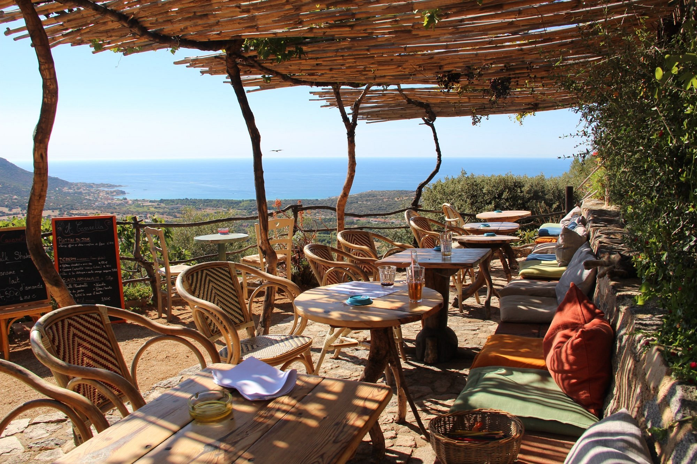

Az A Casarella legfőbb vonzereje a semmivel össze nem hasonlítható, lélegzetelállító elhelyezkedése. A meredek sziklafal szélére épült hangulatos teraszról olyan monumentális kilátás nyílik a Ligur-tengerre és Nonza híres, sötét tónusú, vad kavicsos strandjára, amely szinte megbabonázza a látogatót. A mélyből felszálló sós tengeri szél, a szédítő magasság és a horizont végtelensége olyan drámai, mégis megnyugtató atmoszférát teremt, amely a gasztronómiai élményt egy csapásra felejthetetlen vizuális utazássá emeli.
A konyha hűen tükrözi a sziget gazdag kulináris örökségét és a helyi alapanyagok tiszteletét. Az étlapon a hagyományos korzikai felvágottak (charcuterie), a karakteres kecske- és juhsajtok, valamint a friss, helyi fűszernövényekkel bolondított fogások dominálnak, amelyek tökéletes harmóniában állnak a környék borvidékeinek kínálatával. Nem egy bonyolult, túlgondolt luxusétteremről van szó, sokkal inkább egy olyan őszinte, minőségi gasztronómiai menedékről, ahol az egyszerűség és az autentikus ízek találkoznak a Cap Corse vadregényes természetével.
A helyszín hangulata késő délután és az alkonyat óráiban éri el a csúcspontját, amikor a lemenő nap utolsó sugarai aranybarna fénnyel vonják be a falu régi kőházait és a híres genovai tornyot. Az étterem teraszán megpihenve az utazó kiszakadhat a mindennapi rohanásból, hogy átadja magát a mediterrán életérzés legtisztább formájának: a jó ételeknek, a kiváló boroknak és a természet fenséges látványának. Ez a helyszín a tökéletes példája annak, hogyan válik egy egyszerű étkezés a korzikai kultúra és táj mély, meditatív megélésévé.